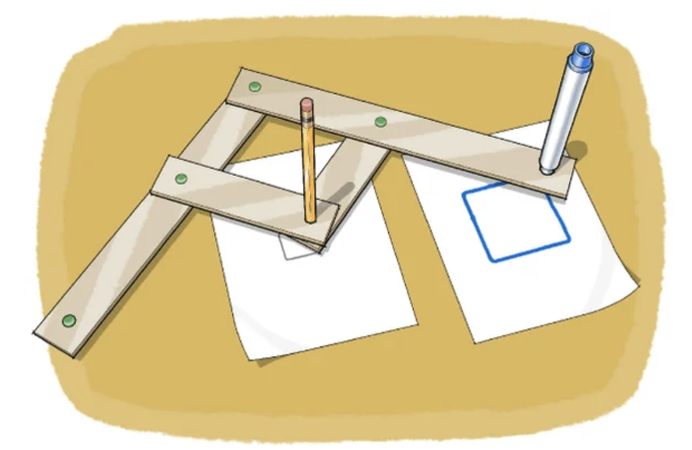
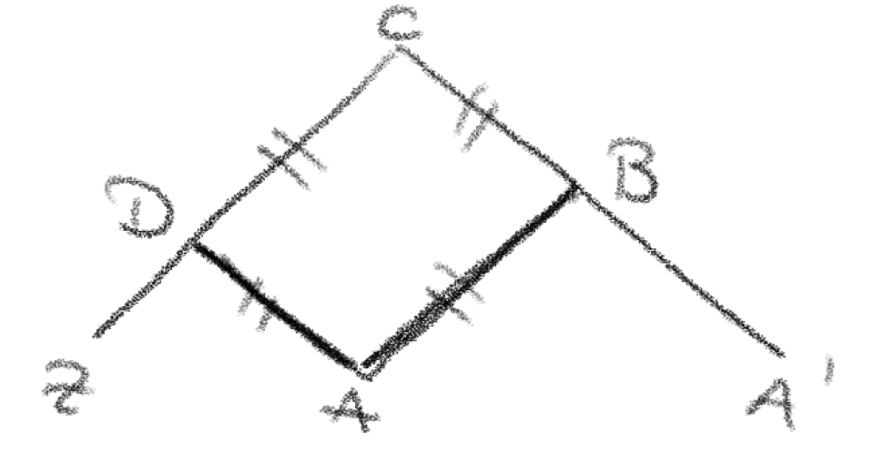
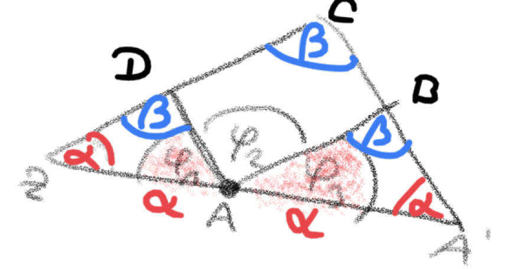

6 Punkte

(a) Erklären Sie die Funktionsweise des Pantographen. Wie muss der Pantograph gebaut bzw. konstruiert werden, damit das erzeugte Bild mit dem Streckfaktor 4 vergrössert wird?
Der Pantograph besteht in der Regel aus vier Leisten, die gelenkig miteinander verbunden sind. Die beiden grossen Leisten sind gleich lang. Die beiden kürzeren sind so zu wählen, dass die Punkte $A, B, C, D$ ein Parallelogramm bilden.

Der Punkt $Z$ wird fixiert. Beim Punkt $A$ wird ein Stift oder ein Nagel eingesteckt, beim Punkt $A'$ ein Stift. Man fährt nun mit dem Nagel am Punkt $A$ eine beliebige Figur ab. Dadurch verändert sich auch immer die Lage des Punktes $A'$. Dadurch wird eine zur Ursprungsfigur ähnliche, aber vergrösserte Figur gezeichnet. Wenn man alternativ eine Figur mit einem Nagel durch den Punkt $A'$ abfährt und einen Stift beim Punkt $A$ befestigt, entsteht eine massstäblich verkleinerte Figur.
Damit das erzeugte Bild mit Streckfaktor 4 vergrössert wird, muss die Strecke $ZC$ viermal so lang sein wie die Strecke $ZD$. (Anders ausgedrückt muss das Gelenkstück $DC$ dreimal so lang sein wie das Gelenkstück $DA$.)
(b) Der Pantograph ist eine mechanische Realisierung der zentrischen Streckung. Weisen Sie dies nach.
Um nachzuweisen, dass der Pantograph eine zentrische Streckung ist, muss gezeigt werden, dass die Punkte $Z$, $A$ und $A'$ stets auf einer Geraden liegen, egal wo man den Punkt $A$ auf der Ebene platziert (i), und dass unabhängig von der Lage von $A$ das Verhältnis $\frac{ZA'}{ZA}$ stets den gleichen Wert annimmt (ii).
- Zu zeigen ist daher, dass für die in der Skizze eingezeichneten
Winkel $\varphi_1+\varphi_2+\varphi_3=180^\circ$ gilt.

Aufgrund der Bauweise des Pantographen sind die Dreiecke $ZAD$, $AA'B$, $ZA'C$ ähnlich zueinander und gleichschenklig, mit den Winkeln $\alpha$ und $\beta$ (siehe Skizze). Damit gilt $\varphi_1=\varphi_3=\alpha$.
Zudem gilt $\varphi_2=\beta$, da es sich um Stufenwinkel handelt.
Aufgrund der Winkelsumme im Dreieck gilt dabei $2\cdot\alpha+\beta=180^\circ$, und daraus folgt die Behauptung.
- Aufgrund der Bauweise des Pantographen sind $DA$ und $A'C$ parallel. Weiter ist das Verhältnis $\frac{ZC}{ZD}$ konstant bzw. fixiert (im Beispiel aus (a) gilt $\frac{ZC}{ZD}=4$). Nach dem ersten Strahlensatz gilt daher $\frac{ZA'}{ZA}=\frac{ZC}{ZD}$ konstant, und das war zu zeigen.
(c) Erläutern Sie präzise, was fachdidaktisch unter dem operativen Prinzip verstanden wird. Formulieren Sie eine Aufgabe zum Pantographen, in der dieses Prinzip zum Tragen kommt.
Das operative Prinzip soll dabei helfen, (mathematische) Objekte zu erfassen. Dabei soll erforscht werden, wie diese konstruiert sind und wie sie sich verhalten, wenn Operationen auf sie wirken. Es gliedert sich in drei Teile. Es gilt zu
- untersuchen, welche Operationen ausführbar und wie sie miteinander verknüpft sind,
- herausfinden, welche Eigenschaften und Beziehungen den Objekten durch Konstruktion aufgeprägt werden,
- beobachten, welche Wirkungen Operationen auf Eigenschaften und Beziehungen der Objekte haben (Was geschieht mit …, wenn …?).
Beispielaufgaben sollten sich auf einen der drei oben genannten Punkte beziehen, z. B.
- Fahre unterschiedliche Dreiecke mit dem Pantographen ab. Was kannst du über die verschiedenen Bildfiguren aussagen (welche Gemeinsamkeiten und Unterschiede weisen sie auf)?
- Fahre die Figur nicht über die mittlere Spitze ab, sondern über die äussere, und lasse die Bildfigur über die innere Spitze erzeugen. Was stellst du fest?
- Wie verändert sich die Bildfigur, wenn du die Seitenverhältnisse des Gelenkparallelogramms veränderst?